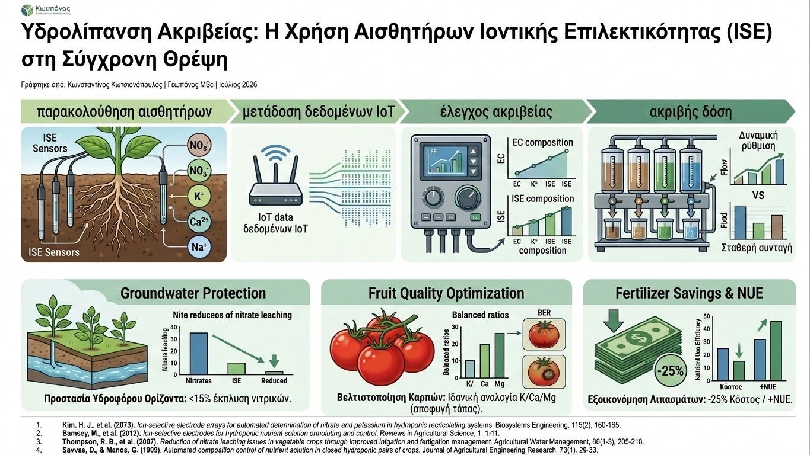

Η ορθολογική θρέψη των καλλιεργειών αποτελεί έναν από τους κύριους πυλώνες της βιώσιμης γεωργίας. Παραδοσιακά, ο έλεγχος των θρεπτικών διαλυμάτων στην υδρολίπανση βασιζόταν στη συνολική μέτρηση της Ηλεκτρικής Αγωγιμότητας (EC). Αν και η EC προσφέρει μια γενική εικόνα για τη συγκέντρωση των αλάτων στο εδαφικό διάλυμα ή το υπόστρωμα, αδυνατεί να προσδιορίσει την ακριβή αναλογία των επιμέρους στοιχείων (π.χ. αζώτου, καλίου, ασβεστίου), οδηγώντας συχνά σε τροφοπενίες ή τοξικότητες λόγω ανισορροπίας θρεπτικών.
Η εξέλιξη της αγροτικής τεχνολογίας δίνει πλέον τη δυνατότητα χρήσης **Αισθητήρων Ιοντικής Επιλεκτικότητας (Ion-Selective Electrodes - ISE)** απευθείας στο πεδίο. Οι αισθητήρες αυτοί μετρούν τη δυναμική διαφορά που δημιουργείται από τη συγκέντρωση συγκεκριμένων ιόντων, όπως τα νιτρικά (NO₃⁻), το κάλιο (K⁺), το ασβέστιο (Ca²⁺) και το νάτριο (Na⁺). Μέσω της συνεχούς παρακολούθησης των ιόντων στη ριζοσφαίρα, ο γεωπόνος αποκτά μια πραγματική εικόνα για την πρόσληψη στοιχείων από το φυτό σε κάθε φαινολογικό στάδιο.

Η διασύνδεση των αισθητήρων ISE με **πλατφόρμες IoT και αυτοματοποιημένες κεφαλές υδρολίπανσης (Fertigation Controllers)** επιτρέπει τη δυναμική προσαρμογή της πυκνότητας των μητρικών διαλυμάτων σε πραγματικό χρόνο. Αντί για σταθερές συνταγές λίπανσης, το σύστημα εγχέει ακριβώς τις ποσότητες των λιπασμάτων που απαιτούνται για να διατηρηθεί η ιδανική αναλογία ιόντων, λαμβάνοντας υπόψη τις κλιματικές συνθήκες και την τρέχουσα διαπνοή της καλλιέργειας.
Τα επιστημονικά τεκμηριωμένα οφέλη της υδρολίπανσης με αισθητήρες ISE περιλαμβάνουν:
- Προστασία του Υδροφόρου Ορίζοντα: Η ακριβής δόση αζώτου αποτρέπει την υπερβολική συγκέντρωση νιτρικών στη ριζοσφαίρα, ελαχιστοποιώντας την έκπλυση νιτρικών αλάτων στα υπόγεια ύδατα.
- Βελτιστοποίηση της Ποιότητας των Καρπών: Η διατήρηση της σωστής αναλογίας Καλίου/Ασβεστίου/Μαγνησίου προλαμβάνει φυσιολογικές ανωμαλίες των καρπών (όπως η τάπα της τομάτας - Blossom End Rot).
- Εξοικονόμηση Λιπασμάτων: Η αποφυγή της αλόγιστης χρήσης εισροών μειώνει το κόστος παραγωγής έως και 25%, αυξάνοντας παράλληλα την αποτελεσματικότητα χρήσης θρεπτικών (Nutrient Use Efficiency - NUE).
Η ενσωμάτωση των αισθητήρων ιοντικής επιλεκτικότητας στην καθημερινή γεωργική πράξη μετατρέπει τη λίπανση από μια εμπειρική διαδικασία σε μια επιστήμη ακριβείας. Η τεχνολογία αυτή προσφέρει τα εργαλεία για μια υψηλής απόδοσης παραγωγή με μειωμένες εισροές και ελάχιστο περιβαλλοντικό αποτύπωμα.